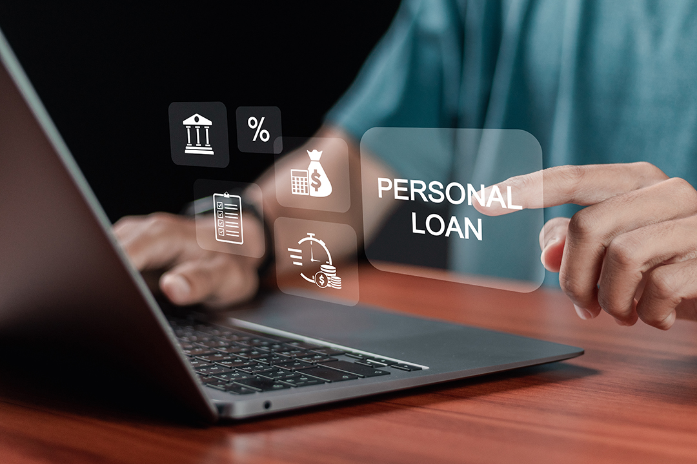

El prestamo por convenio es un tipo de prestamo con condiciones especiales orientadas a instituciones que tengan un acuerdo con ciertas entidades financieras. Cada entidad tiene diferente formas de evaluar a lo que puede influir en el monto y el descuento mensual.
El préstamo de libre disponibilidad está dirigido a clientes que no tienen ningún descuento en sus boletas por préstamo por convenio. Este tipo de préstamo se otorga como el único crédito descontado a través de la boleta de pago, el dinero desembolsado lo pueden usar de manera libre para inversiones, proyectos, negocios propios, etc.
El préstamo subrogado es un tipo de préstamo que se otorga a clientes que ya tienen un préstamo por convenio con otra entidad financiera. Este préstamo se usa para cancelar la deuda que se tiene con la otra entidad y así tener un solo préstamo con mejores condiciones. El dinero desembolsado se usa exclusivamente para cancelar la deuda con la otra entidad financiera.
Esta modalidad de préstamo por convenio es para financiar a clientes que ya cuentan con un préstamo por convenio vigente descontado por boleta de alguna de las diversas entidades financieras. La ampliación es un financiamiento para libre disponibilidad o compra de deuda, ya que puede ser de una modalidad mixta. La diferencia a ampliar puede ser usada para libre disponibilidad o para cancelar deuda con otra entidad financiera.